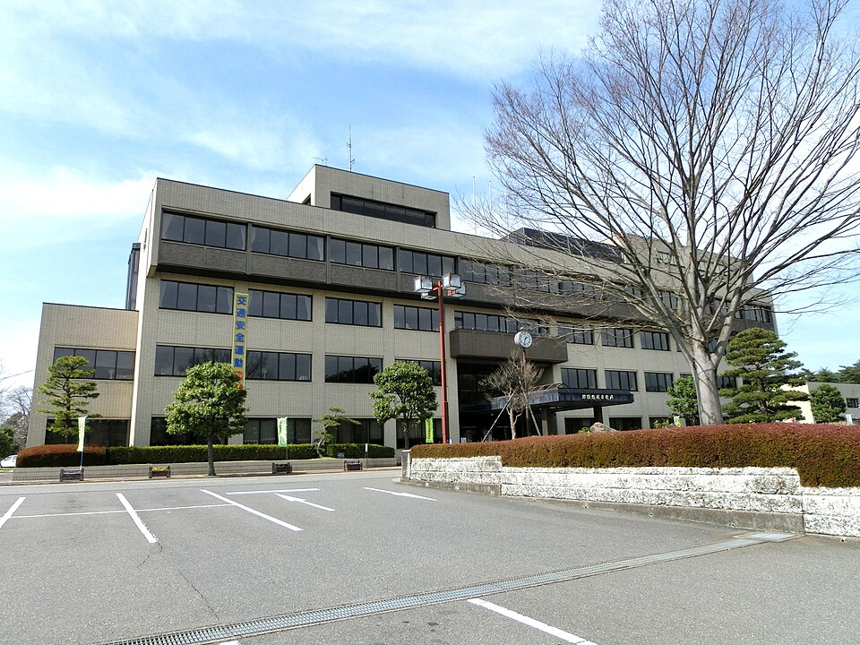
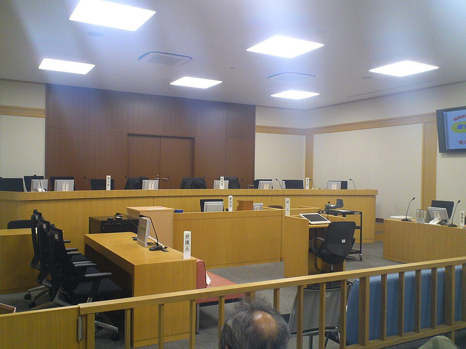
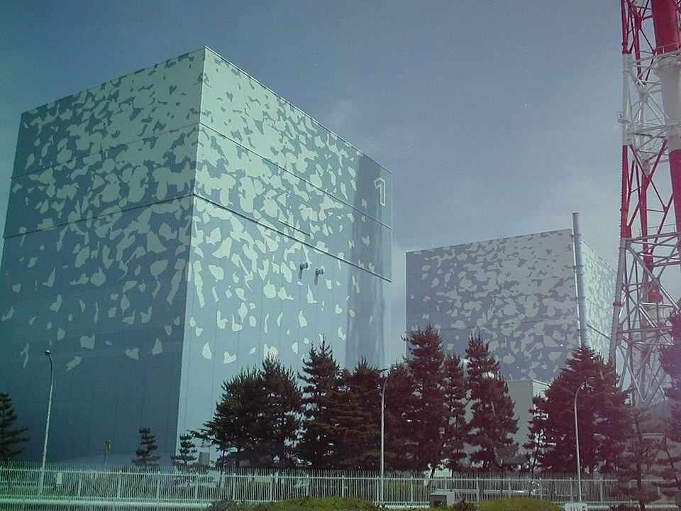
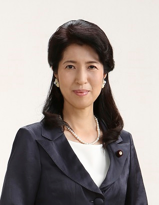

三
三ヶ尻久美子
みかじり・くみこ
代表取締役
役割：会社業務全般を統括し、繁殖牛が存在しない契約を勧誘した刑事事件の共同被告
その後：東京高裁懲役2年6月。個人破産開始決定20
1981年〜2026年
安愚楽牧場は、顧客に繁殖牛を販売し、飼養を受託し、子牛の売却益を配当し。契約満了時に牛を買い戻す和牛オーナー制度を全国展開した。1
裁判所は、遅くとも1999年3月期末以降、繁殖牛が不足する状態で新規契約を拡大し。既存契約の配当・再買戻しを新規契約資金に依存する仕組みになっていたと認定した。2
2011年、口蹄疫、東日本大震災・福島第一原発事故、牛肉価格下落、解約増加で資金繰りが破綻し、約7万3,000人。約4,200億円規模の被害・負債に至った。2
安愚楽牧場は1981年12月18日に有限会社安愚楽共済牧場として設立された。黒毛和種牛の繁殖・肥育と食肉販売を基礎に、顧客が繁殖牛を購入して飼養を委託するオーナー制度を中核商品にした。代表的な契約は300万円、期間6年で、毎年子牛予定売却利益から飼養委託費を差し引いた13万5000円を配当し。年4.5％の利回りを示していた。契約満了時には牛の現物返還か、安愚楽牧場による再買戻し代金の支払いを選べた。1
オーナー契約は，１頭の繁殖牛が契約期間中毎年必ず１頭の子牛を産むことを前提としていた（以下「１頭１産の前提」という｡）。 ア オーナーは，安愚楽本体に対し，繁殖牛の売買代金と１年分（最初の１年分に相当）の飼養委託費として所定の契約代金を支払い，所定の契約期間にわたり，オーナー牛の飼養を安愚楽本体に委託する（甲１２契約では，契約代金が３００万円，契約期間が６年とされている。以下，契約期間が満了する時期を「契約満了時」という｡)。 イ 安愚楽本体は，毎年，オーナー牛が出産した子牛１頭を，予め決められた子牛予定売却利益で買い取り，所定の支払日に，オーナーに対し，子牛予定売却利益からオーナー牛の１年分（子牛を出産した年に相当）の飼養委託費を控除した金額（以下「配当」という｡)を支払う（甲１２契約では，支払日は毎年８月末日，子牛予定売却利益が税込３８万５０００円，飼養委託費が税込２５万円とされているから，年に１度支払われる配当は１３万５０００円（利回りは年４．５％）となる｡）。 エ オーナーは，契約期間満了の際，安愚楽本体に対し，保有するオーナー牛の現実の引渡しを求めるか，オーナー牛の再売買請求権を行使して再売買代金の支払を受けるかを選択することができる（以下，この約定を「選択条項」という｡)。ただし，オーナーが何らの意思表示をしない場合には，再売買請求権を行使したとみなされる。
意味：契約が「牛の所有」と「配当・買戻し」を組み合わせた仕組みだったことを示す。判決は、実態を判断する前提としてこの契約構造を詳細に認定している。[[判決PDF・6〜7頁](https://www.courts.go.jp/assets/hanrei/hanrei-pdf-86737.pdf)]
裁判所の認定では、遅くとも1999年3月期末以降、繁殖牛の実在数がオーナー牛の契約頭数を下回る状態が続いた。それでも契約勧誘は継続し、2008年11月には契約頭数が9万頭を超え、契約残高は3,000億円を超えた。2009年1月の農林水産省立入検査では直営牧場の繁殖牛が約3万1,000頭と把握されたが、会社側は契約頭数や契約残高を実態より少なく説明したと判決で認定された。23
安愚楽本体は，遅くとも平成８年頃既に，飼養する繁殖牛全部がオーナー牛となっており，新たにオーナーに販売できる繁殖牛がいないのに，オーナー契約の勧誘や締結を行うようになった。繁殖牛の実在数がオーナー牛の総数（以下「契約頭数」という｡)より少ないという事態（以下，このような事態を「繁殖牛不足」という｡)が生じていたのである（甲５９，６０，７５，９６）。 Ｊ社長及びＫは，平成２２年９月頃から平成２３年７月頃までの間，オーナー契約を希望する顧客１９２名に対し，繁殖牛の実在について不実の事実を告げたとの特定商品等の預託等取引契約に関する法律（以下「特定商品預託法」という。）違反罪（不実告知罪）で起訴され，平成２６年１０月１６日，有罪判決の宣告を受け，Ｊ社長は懲役２年６月に，Ｋは懲役２年に処せられた（甲９６，１０７。いずれも実刑判決）。
意味：裁判所が、単なる経営悪化ではなく繁殖牛が足りない状態で契約勧誘を続けた事実とその刑事責任を明示している。[[判決PDF・9頁](https://www.courts.go.jp/assets/hanrei/hanrei-pdf-86737.pdf)]
会社はオーナー契約を牛の販売として処理し、契約満了時の再買戻しを牛の仕入れとして扱った。将来の再買戻し代金債務の総額は貸借対照表の負債に計上せず、契約頭数を注記する形だった。裁判所は、実在牛との関連が薄い契約を多数締結し、契約代金が実在牛や飼養の対価ではなく。元本返還を約して受け入れた金銭と評価できるとした。新規契約から入る資金は、既存契約の配当や再買戻しに回り、牛の繁殖実績と契約上の支払義務の差を広げた。2
しかし，安愚楽本体は，オーナー契約勧誘用のパンフレット（甲１３），案内書（甲１４）及び雑誌広告（甲２５，２６）により，過去に減額条項が適用された例はないとか，出荷額が低調となった場合でも別途に基金から差額が補てんされるなどと強調し，減額条項が有名無実であるとして勧誘を行っていた。実際にも，減額条項が適用された例はない。 そもそも，安愚楽本体は，平成７年以降，新たにオーナー契約を締結する繁殖牛が存在しないのに多数のオーナー契約を締結しており，このような架空取引において減額条項の適用を考える余地はないから，架空取引を常態化させていた安愚楽本体は，減額条項の適用などおよそ念頭に置かずにオーナー契約を締結し，必ず売買代金を返金すると約束してオーナー制度を維持していたのである。 したがって，オーナー契約代金は，出資法２条１項が禁止する「預り金」に該当するというべきであり，オーナー制度は，出資法違反の業務遂行である。
意味：契約上の価格下落条項が実際には機能せず、返金を前提に新規資金を集めていたという、裁判所の法的評価が示される。[[判決PDF・11〜12頁](https://www.courts.go.jp/assets/hanrei/hanrei-pdf-86737.pdf)]
ふるさと牧場で買戻金の支払遅延が増えた後、農林水産省は2007年12月に同社へ立入検査を行った。安愚楽牧場にも2009年1月に立入検査を行い、同年7月には会社から財務・飼養状況の報告を受けた。2009年9月に預託法の所管が消費者庁へ移った後、消費者庁は破綻まで立入検査を行わなかったと判決で認定された。2011年の国会答弁では、農林水産省が2009年の立入検査で経営状況の詳細を把握していなかったこと、消費者庁が報告を受ける機会を持ったことが示された。23
一について 平成二十一年一月、農林水産省は、特定商品等の預託等取引契約に関する法律（昭和六十一年法律第六十二号。以下「預託法」という。）第十条第一項の規定に基づき、有限会社安愚楽共済牧場（当時）に立入検査を行った。この立入検査は預託法違反の有無を調査するために行ったものであり、財務諸表等の検査は行ったが、同社の経営状況の詳細については把握していない。 二について お尋ねの報告については、平成二十一年七月十四日付けで、株式会社安愚楽牧場から農林水産省に対し、預託法第三条の規定に基づき顧客に対し交付している書面等、預託法第六条に規定する業務及び財務の状況を記載した書類、平成二十年度の事業報告書及び決算書類、同年度の法人税に係る確定申告書及びその添付書類の写し並びに決算期現在における牛の飼養状況についての書類が提出されている。 三について 平成二十二年七月、株式会社安愚楽牧場から消費者庁取引・物価対策課（当時）に対し、預託法の遵守状況について報告したい旨の連絡があった。消費者庁としては、二についてで述べた同社からの報告により、（中略）預託法上の問題はないことが確認されていたこと、また、独立行政法人国民生活センター及び全国の消費生活センターに寄せられている苦情・相談情報に、同社の預託法違反をうかがわせるものは見受けられなかったことから、同社に対して、必要と判断した場合には話を聞く旨を回答した。
意味：政府答弁は、農水省が立入検査で経営状況の詳細を把握していなかったこと、消費者庁が報告を受ける機会を逃したことを示す。[[参議院答弁書](https://www.sangiin.go.jp/japanese/joho1/kousei/syuisyo/179/touh/t179024.htm)]
2010年の宮崎県での口蹄疫では、県内で約1万5,000頭が殺処分された。2011年3月の東日本大震災と福島第一原発事故の後は、出荷制限や風評被害により牛肉価格が急落し、オーナーからの解約申出も増えた。2011年3月末には直営・預託牧場で合計約14万5,226頭を飼養していたが、民事再生申立時の飼育費は月20億円超、手元資金は約11億円だった。繁殖牛は短期間に大量売却できる通常市場がなく、会社は牛と飼料費を抱えたまま資金を失った。45
安愚楽牧場は、民事再生手続申立日現在、自社牧場及び預託牧場において、約１４万５，０００頭もの牛を保有しこれらを飼育するには餌代などを含め月額２０億円超の資金が必要であった。他方、安愚楽牧場の申立当時の保有資金は、約１１億数千万円であり、１か月間の飼育費用すら捻出することができない状況にあった。そこで、保有牛を早期に処分し、また、飼料会社からの餌の調達にあたって一部掛け取引での仕入れを行い、更には牛に与える餌の量を数十パーセント減らすなどの調整を行いながら、飼育を継続してきた。 しかしながら、安愚楽牧場の牛の大半は、枝肉出荷を想定しない繁殖牛であり、この繁殖牛を早期かつ大量に処分する必要があったが、繁殖牛は取引市場が存在せず、相対での売却しかできなかったため、生体販売をほとんど行うことができず、上記のとおり平成２３年１１月４日に管理命令が発令されるに至った。
意味：破綻時には牛の飼育費が手元資金を大幅に上回り、通常の市場で短期処分できない繁殖牛を抱えていた。[[報告書・2〜3頁](https://agurahigai.a.la9.jp/agura20120530-157report.pdf)]
2011年8月9日、安愚楽牧場は東京地方裁判所に民事再生を申し立てた。9月6日に開始決定が出た当初は、経営陣が事業を続けるDIP型だった。しかし5,000人余りの債権者が管理命令を申し立て、会社側も管理命令を相当とする上申書を提出したため、11月4日に渡邊顯弁護士が管財人に選任された。管財人は、手元資金が4億数千万円で、約13万頭の牛を抱え。2週間後には資金が枯渇する危険があると判断した。11月8日に民事再生は廃止され、12月9日に破産手続が始まった。5
株式会社安愚楽牧場（以下、単に「安愚楽牧場」又は「破産者」という。）は、牛肉輸入自由化、ＢＳＥ、口蹄疫など畜産事業の収益状況を悪化させる厳しい経営環境が重なる中、原発事故による出荷価格の大幅下落やオーナーからの解約申出の急増により、資金繰りが急速に悪化したとして、平成２３年８月９日に民事再生手続開始の申立てを東京地方裁判所に行い、同日同庁より当職が監督委員に選任された。 その後、安愚楽牧場は、同年９月６日に民事再生手続開始決定を受けた。当初は、当時の経営者が手続を遂行し、監督委員がその手続きを監督する、いわゆるＤＩＰ型の方法で手続が進められていたが、５０００人余りの債権者から管理命令の申立てがあり、また安愚楽牧場側からも管理命令を相当とする上申書が提出されたため、同年１１月４日に管理命令が発令され、当職が管財人に選任された。 これを受けて、当職が管財人として安愚楽牧場の当時の状況を詳細に確認したところ、民事再生手続を維持することは困難であると判断したため、同月８日東京地方裁判所に対して民事再生手続の廃止を求め、同日、同庁より、民事再生手続廃止決定がなされるとともに保全管理命令が発令され、当職が保全管理人に就任した。その後、同年１２月９日に破産手続開始決定が出され、当職が破産管財人に就任した。
意味：破綻の直接要因と、債権者の管理命令申立てによって経営陣主導の再生から管財人主導へ移行した経緯が記されている。[[報告書・1〜2頁](https://agurahigai.a.la9.jp/agura20120530-157report.pdf)]
2014年、東京地裁は三ヶ尻久美子に懲役2年10月、大石勝也に懲役2年の実刑を言い渡し、東京高裁は同年10月16日にそれぞれ懲役2年6月。懲役2年とした。2017年の大阪高裁判決は、再買戻し債務の総額を顧客に説明しなかった点や、実在牛がないのに契約を続けた点を民事責任の判断対象にした。国家賠償訴訟では、大阪地裁が2026年7月30日に国へ約3億8,000万円の賠償を命じたと報道される一方、東京地裁は同年5月26日に請求を棄却したと報じられている。控訴・確定の状況は本調査で未確認であり、監督責任の司法判断は分かれている。6178
オーナー契約に基づく再売買代金債務は，その経済実態に照らせば，契約締結と同時に確定的に発生する安愚楽本体の債務と解される。契約満了時に繁殖牛の引渡しを求めるオーナーなど皆無であるし，そもそも，繁殖牛の持分を取得したオーナーにとって繁殖牛の引渡しを求めること自体が不可能である。 すなわち，安愚楽本体は，再売買代金債務の総額（同債務の履行可能性を判断する上で最も重要な事項）を顧客に秘匿してオーナー契約を勧誘していた。これは，特定商品預託法又は信義則により義務付けられる説明を果たさない違法な勧誘であった。
意味：契約満了時の買戻し負担を会社の重要債務と認定し、それを顧客に説明しなかった点を違法な勧誘と評価している。[[判決PDF・12〜13頁](https://www.courts.go.jp/assets/hanrei/hanrei-pdf-86737.pdf)]
安愚楽牧場の制度を支えたのは、牧場だけではなかった。判決文には、牛の保険を扱うエー・アイ・シー、その取締役となった親族。ホテル・売店・車両などの関連会社が記載されている。三ヶ尻久美子は代表取締役として会社全般を統括し、大石勝也は経理、顧客管理。営業を担当した重要な補佐役と認定された。三ヶ尻勲と増渕進も関連役員として会社破綻後の破産手続の対象になった。広告・推薦の面では、海江田万里の経済評論家時代の広告掲載が報道されたが、刑事・行政責任の確定的認定は未確認である。19
破産管財人は、牛・牧場・従業員を一体で事業譲渡し、飼育の継続と労働債務の軽減を図った。2011年11月8日から12月9日までに処分した牛は125,951頭で、牛・牧場等の譲渡代金は42億8622万円だった。東京電力からは原発事故損害賠償として約23億7,000万円、関係会社や元役員等の破産手続からも回収が行われた。破産手続では消費税還付約173億円余りも配当原資となり、普通破産債権への配当は214億0669万1604円だった。契約者の人数と債権額に対して、回収と配当の規模は限られた。510111
破綻後、国民生活センターは被害回復を名目にした二次被害を注意喚起した。2022年6月には改正預託法が施行され、販売した商品を預かり、一定期間後に買い取る形式の預託等取引が原則禁止された。安愚楽牧場との個別の因果関係が法改正資料に明記されているかは本調査で未確認である。行政文書開示訴訟や国家賠償訴訟では、2009年の立入検査、所管移管後の対応。規制権限の行使と被害との因果関係が争われている。2026年の大阪地裁と東京地裁の判断が分かれたため、控訴・確定を含む結論は未確認のままである。12131478
刑事控訴審判決全文、破産管財人の任務終了計算報告書全文、行政処分書原文、第三者委員会報告書は。本調査で取得できなかった。詐欺不起訴の裁定書や国家賠償訴訟の控訴・確定状況も未確認である。したがって、報道や弁護団公表に依拠する箇所はその状態を明記した。61115
契約者は個人投資家に限らず、全国に広がった。両国国技館で債権者説明会が開かれ、会社破綻後は普通破産債権7万0816件が届け出られた。優先債権は195件であり、配当手続の対象は多数の契約者と関係事業者に及んだ。1611
経営陣主導の再生から管財人主導の破産へ移行した。5
配当額は確定した。11




| 安愚楽牧場本社所在地 | 栃木県那須塩原市埼玉2-37 | 会社本店・破綻企業所在地 | 19 |
| 登記上所在地 | 栃木県那須郡那須町高久丙1796 | 登記上の本店所在地 | 19 |
| 東京地方裁判所 | 東京都千代田区霞が関1-1-4 | 民事再生・破産・刑事第一審 | 25 |
| 東京高等裁判所 | 東京都千代田区霞が関1-1-1 | 刑事控訴審・民事控訴審 | 23 |
| 大阪地方裁判所 | 大阪府大阪市北区西天満2-1-10 | 2026年国家賠償判決 | 7 |
| 両国国技館 | 東京都墨田区横網1-3-28 | 2011年債権者説明会 | 16 |
| 日比谷公会堂 | 東京都千代田区日比谷公園1-3 | 破産管財人説明会の会場として弁護団資料に記載 | 17 |
| 農林水産省 | 東京都千代田区霞が関1-2-1 | 2009年立入検査の所管官庁 | 3 |
| 消費者庁 | 東京都千代田区霞が関3-1-1 | 2009年9月以降の預託法所管官庁 | 2 |
| 宮崎県児湯郡 | 宮崎県児湯郡 | 口蹄疫発生地域・殺処分の影響 | 4 |
| 福島第一原子力発電所 | 福島県双葉郡大熊町・双葉町 | 牛肉価格・出荷制限・風評被害の背景 | 5 |
裁判所は、繁殖牛が不足する状態で契約を拡大し、契約満了時の再買戻し債務を顧客に説明しないまま。実在牛との関連が薄い資金受入れを続けたと評価した。2
みかじり・くみこ
代表取締役
役割：会社業務全般を統括し、繁殖牛が存在しない契約を勧誘した刑事事件の共同被告
その後：東京高裁懲役2年6月。個人破産開始決定20
おおいし・かつや
経理・顧客管理・営業担当
役割：三ヶ尻の重要な補佐役と認定され、実在しない牛の耳標番号を記載した契約書等を送付
その後：東京高裁懲役2年6
ますぶち・すすむ
元役員
みかじり・いさお
関連役員・創業家関係者
わたなべ・あきら
弁護士・破産管財人
役割：民事再生監督委員、管理命令後の管財人、破産管財人を務めた
その後：牛・牧場の急速売却と配当を実施5
きとう・まさき
全国安愚楽牧場被害対策弁護団長
役割：被害者救済、管理命令申立て、刑事告訴・国家賠償訴訟を主導
その後：被害者側弁護団として活動26
かいえだ・ばんり
経済評論家、後に政治家
役割：安愚楽牧場広告への推薦文掲載が問題化した広告塔問題の当事者
その後：広告掲載の事実は報道されているが、刑事・行政責任の認定は未確認9
うえの・みちこ
参議院議員
役割：農水省の立入検査・報告内容について政府答弁を引き出した
その後：質問主意書による国会活動3
いのうえ・ひろみち
東京高裁裁判長
役割：三ヶ尻・大石の刑事控訴審を担当
その後：一審から各4か月減じた実刑判決23
あしざわ・せいじ
東京地裁刑事第15部裁判長
役割：刑事第一審を担当
その後：三ヶ尻懲役2年10月、大石懲役2年4月の実刑判決20
さいとう・つよし
大阪地裁裁判長
役割：大阪国家賠償訴訟を担当
その後：2026年7月30日に国へ約3億8,000万円の賠償を命じたと報道7
おがわ・よしき
東京地裁裁判長
役割：東京国家賠償訴訟を担当
その後：2026年5月26日に請求棄却と報道8
預託法所管官庁職員
役割：2009年立入検査で頭数・契約残高を確認したが、深い調査を終えなかったと判決認定
その後：規制権限の行使が国家賠償訴訟で争われた2
預託法・景品表示法担当
役割：所管移管後、破綻まで安愚楽牧場への立入検査をしなかったと判決認定
その後：国家賠償訴訟の被告側機関となった2
相関図は、契約を拡大した経営陣、関連会社と広告・推薦の関係、立入検査と刑事・国家賠償裁判を担った機関。被害者側弁護団と管財人を分けて示す。闇社会との接点は、調査メモで確認できないものと報道段階の広告問題を区別した。
上司と部下・盟友。三ヶ尻は代表取締役として業務全般を統括し、大石は経理、顧客管理。営業を担当した重要な補佐役と認定された。刑事裁判では両名の共謀が認定された。6
上司と部下。両名は安愚楽牧場の経営陣として詐欺告訴の対象となったが、増渕について刑事有罪判決は確認できない。22
姻戚・血縁・創業家。同姓で関連役員として扱われ、双方が破産手続の対象となった。親族関係の詳細は本調査で未確認。21
広告主と推薦者。海江田の経済評論家時代の推薦・広告掲載が「広告塔」問題として報道された。刑事・民事責任の確定的認定は未確認。9
対立・確執。三ヶ尻の経営責任を問う被害者側弁護団と、会社・経営者側が対峙した。弁護団は管理命令・破産・刑事責任追及を進めた。26
対立・確執。大石は刑事被告人、紀藤は被害者側弁護団長として刑事責任を追及した。20
対立・確執。増渕は詐欺告訴対象となり、弁護団は不起訴に対する声明を公表した。22
上司と部下から管財人と破産者へ。渡邊は会社の再生監督委員・管財人として、三ヶ尻経営下の会社財産を管理・売却した。5
管財人と破産債務者。大石の破産手続と会社破産手続は、被害回復のための財産調査・配当の文脈で扱われた。20
監督者と被監督事業者。2009年立入検査で、会社側は契約頭数・残高を実態より少なく説明したと判決認定された。2
対立・確執。Kは契約頭数・残高や繁殖牛不足について説明し、農水省側はその説明を受け入れたと判決文に記載される。Kの実名は判決文で匿名化されており未確認。2
監督者と被監督事業者。所管移管後、消費者庁は破綻まで立入検査を行わなかったと判決認定された。2
追及・説明要求。上野議員の質問に対し、政府は2009年立入検査と提出資料について答弁した。3
裁判官と被告人。控訴審で一審の実刑を4か月ずつ減じたが、実刑自体は維持した。23
裁判官と被告人。一審で懲役2年10月の実刑判決を言い渡した。20
裁判官と被告。大阪地裁国家賠償判決で、農水省の規制権限不行使を違法と判断したと報道された。7
裁判官と被告。東京地裁国家賠償訴訟では出資者側請求を棄却した。8
また，被告エー・アイ・シーは，安愚楽本体の牛の保険を取り扱うことによりオーナー制度を支えており，その取締役がＪ社長の長男夫婦（被告Ｄと被告Ｅ）であったことからも明らかなとおり，繁殖牛不足が常態化していたにもかかわらず，安愚楽本体がオーナー契約の募集を続けていたことを熟知していた。 さらに，被告エー・アイ・シーは，牧場の畜舎，事務所，関連会社のホテル・売店，全国の車両など，安愚楽グループ会社の保険全般を取り扱い，安愚楽本体が行う違法な和牛預託商法の根幹を支えていた。 被告Ｄは，Ｊ社長と同居していた跡継ぎたる長男であり，（中略）被告Ｆは，Ｊ社長の娘（被告Ｄの妹）であり，（中略）Ｊ社長は，信頼する身内である被告Ｄ，被告Ｅ及び被告Ｆの３名に安愚楽本体の事業に協力・加担するよう依頼し，上記３名を子会社の役員に就任させたのであり，
意味：親族が保険・ホテル・レストラン等の関連会社を担い、グループ事業を支えたという人間関係の緊張を示す。[[判決PDF・16〜17頁](https://www.courts.go.jp/assets/hanrei/hanrei-pdf-86737.pdf)]
主要な判決文、破産管財人報告書、国会答弁などを確認した範囲では、暴力団、総会屋、仕手筋、ブローカー・フィクサー。海外口座の関与は確認できない。海江田万里の広告・推薦文は報道されたが、政治献金・金銭授受の認定は未確認である。
組織名・人物は未確認 確認できない
人物・組織は未確認 確認できない
該当人物は未確認 確認できない
海江田万里の広告掲載は報道されたが、政治献金・金銭授受の認定は未確認 報道
海江田万里 報道
人物は未確認 確認できない
該当口座・法人は未確認 確認できない
三ヶ尻勲の死亡は公表されたが、事件との関係・警察判断は未確認 確認できない
一について 平成二十一年一月、農林水産省は、特定商品等の預託等取引契約に関する法律（昭和六十一年法律第六十二号。以下「預託法」という。）第十条第一項の規定に基づき、有限会社安愚楽共済牧場（当時）に立入検査を行った。この立入検査は預託法違反の有無を調査するために行ったものであり、財務諸表等の検査は行ったが、同社の経営状況の詳細については把握していない。 二について お尋ねの報告については、平成二十一年七月十四日付けで、株式会社安愚楽牧場から農林水産省に対し、預託法第三条の規定に基づき顧客に対し交付している書面等、預託法第六条に規定する業務及び財務の状況を記載した書類、平成二十年度の事業報告書及び決算書類、同年度の法人税に係る確定申告書及びその添付書類の写し並びに決算期現在における牛の飼養状況についての書類が提出されている。 三について 平成二十二年七月、株式会社安愚楽牧場から消費者庁取引・物価対策課（当時）に対し、預託法の遵守状況について報告したい旨の連絡があった。消費者庁としては、二についてで述べた同社からの報告により、（中略）預託法上の問題はないことが確認されていたこと、また、独立行政法人国民生活センター及び全国の消費生活センターに寄せられている苦情・相談情報に、同社の預託法違反をうかがわせるものは見受けられなかったことから、同社に対して、必要と判断した場合には話を聞く旨を回答した。
意味：政府答弁は、農水省が立入検査で経営状況の詳細を把握していなかったこと、消費者庁が報告を受ける機会を逃したことを示す。[[参議院答弁書](https://www.sangiin.go.jp/japanese/joho1/kousei/syuisyo/179/touh/t179024.htm)]
| 立場 | 得たもの | 失ったもの | 内容 | 出典 |
|---|---|---|---|---|
| 経営陣 | 未確認 | 会社破産・個人破産 | 新規契約代金を事業拡大・配当・再買戻し・関連会社運営に利用したが、個人利益額は未確認 | 2 |
| オーナー | — | 4,200億円規模 | 契約上の配当・買戻しを期待したが、普通破産配当は214億0669万円 | 11 |
| 従業員 | 雇用継続 | 未確認 | 牛・牧場・従業員を一体で事業譲渡したと管財人が報告 | 5 |
| 飼料会社・預託牧場 | 未確認 | 未確認 | 掛け取引・飼養委託・牛の処分を通じたリスク。個別損失額は未確認 | 5 |
| 破産財団 | 173億円余り | — | 消費税還付。ほかに東京電力賠償や牛・牧場売却を回収 | 110 |
| 国・納税者 | — | 3.8億円 | 大阪地裁判決どおりなら約3億8,000万円。東京地裁は請求を棄却と報道 | 78 |
| 買受人 | 事業取得 | 条件未確認 | 牛・牧場・従業員を取得した買受企業名・条件の全容は未確認 | 5 |
| 東京地裁 | 2014-01-09 | 懲役2年10月・実刑 |
| 東京高裁 | 2014-10-16 | 懲役2年6月・実刑 |
特定商品等の預託等取引契約に関する法律違反。不実の繁殖牛情報を告知した事件。上告・確定時期は本調査で未確認620
| 東京地裁 | 2014-01-09 | 懲役2年4月・実刑 |
| 東京高裁 | 2014-10-16 | 懲役2年・実刑 |
特定商品等の預託等取引契約に関する法律違反。不実の繁殖牛情報を告知した事件。上告・確定時期は本調査で未確認6
| 東京地検 | 2013-10-11 | 嫌疑不十分で不起訴と弁護団が公表 |
詐欺告訴。検察の不起訴裁定書は未取得22
| 大阪高裁 | 2017-04-20 | 元役員の一部について責任を扱った。原審の請求棄却部分などが控訴審で争われた |
被害者損害賠償請求・会社法429条1項に基づく責任。判決の全被告別結論は本調査で未確認1
| 大阪地裁 | 2026-07-30 | 約3億8,000万円の賠償命令と報道 |
国家賠償請求。控訴・確定は未確認7
| 東京地裁 | 2026-05-26 | 1,279人・約63億円の請求を棄却と報道 |
国家賠償請求。控訴審の結果は未確認8
| 消費者庁 | 2011-11-30 | 措置命令理由が公表されたと弁護団が説明 |
雑誌広告の景品表示法上の優良誤認表示。命令原文は本調査で未取得15
| 東京地裁 | 2011-12-09 | 破産手続開始決定 |
| 破産管財人 | 2014-03-12 | 配当手続終了・任務終了 |
会社破産。手続終了11
オーナー契約は，１頭の繁殖牛が契約期間中毎年必ず１頭の子牛を産むことを前提としていた（以下「１頭１産の前提」という｡）。 ア オーナーは，安愚楽本体に対し，繁殖牛の売買代金と１年分（最初の１年分に相当）の飼養委託費として所定の契約代金を支払い，所定の契約期間にわたり，オーナー牛の飼養を安愚楽本体に委託する（甲１２契約では，契約代金が３００万円，契約期間が６年とされている。以下，契約期間が満了する時期を「契約満了時」という｡)。 イ 安愚楽本体は，毎年，オーナー牛が出産した子牛１頭を，予め決められた子牛予定売却利益で買い取り，所定の支払日に，オーナーに対し，子牛予定売却利益からオーナー牛の１年分（子牛を出産した年に相当）の飼養委託費を控除した金額（以下「配当」という｡)を支払う（甲１２契約では，支払日は毎年８月末日，子牛予定売却利益が税込３８万５０００円，飼養委託費が税込２５万円とされているから，年に１度支払われる配当は１３万５０００円（利回りは年４．５％）となる｡）。 エ オーナーは，契約期間満了の際，安愚楽本体に対し，保有するオーナー牛の現実の引渡しを求めるか，オーナー牛の再売買請求権を行使して再売買代金の支払を受けるかを選択することができる（以下，この約定を「選択条項」という｡)。ただし，オーナーが何らの意思表示をしない場合には，再売買請求権を行使したとみなされる。
意味：契約が「牛の所有」と「配当・買戻し」を組み合わせた仕組みだったことを示す。判決は、実態を判断する前提としてこの契約構造を詳細に認定している。[[判決PDF・6〜7頁](https://www.courts.go.jp/assets/hanrei/hanrei-pdf-86737.pdf)]
安愚楽本体は，遅くとも平成８年頃既に，飼養する繁殖牛全部がオーナー牛となっており，新たにオーナーに販売できる繁殖牛がいないのに，オーナー契約の勧誘や締結を行うようになった。繁殖牛の実在数がオーナー牛の総数（以下「契約頭数」という｡)より少ないという事態（以下，このような事態を「繁殖牛不足」という｡)が生じていたのである（甲５９，６０，７５，９６）。 Ｊ社長及びＫは，平成２２年９月頃から平成２３年７月頃までの間，オーナー契約を希望する顧客１９２名に対し，繁殖牛の実在について不実の事実を告げたとの特定商品等の預託等取引契約に関する法律（以下「特定商品預託法」という。）違反罪（不実告知罪）で起訴され，平成２６年１０月１６日，有罪判決の宣告を受け，Ｊ社長は懲役２年６月に，Ｋは懲役２年に処せられた（甲９６，１０７。いずれも実刑判決）。
意味：裁判所が、単なる経営悪化ではなく繁殖牛が足りない状態で契約勧誘を続けた事実とその刑事責任を明示している。[[判決PDF・9頁](https://www.courts.go.jp/assets/hanrei/hanrei-pdf-86737.pdf)]
しかし，安愚楽本体は，オーナー契約勧誘用のパンフレット（甲１３），案内書（甲１４）及び雑誌広告（甲２５，２６）により，過去に減額条項が適用された例はないとか，出荷額が低調となった場合でも別途に基金から差額が補てんされるなどと強調し，減額条項が有名無実であるとして勧誘を行っていた。実際にも，減額条項が適用された例はない。 そもそも，安愚楽本体は，平成７年以降，新たにオーナー契約を締結する繁殖牛が存在しないのに多数のオーナー契約を締結しており，このような架空取引において減額条項の適用を考える余地はないから，架空取引を常態化させていた安愚楽本体は，減額条項の適用などおよそ念頭に置かずにオーナー契約を締結し，必ず売買代金を返金すると約束してオーナー制度を維持していたのである。 したがって，オーナー契約代金は，出資法２条１項が禁止する「預り金」に該当するというべきであり，オーナー制度は，出資法違反の業務遂行である。
意味：契約上の価格下落条項が実際には機能せず、返金を前提に新規資金を集めていたという、裁判所の法的評価が示される。[[判決PDF・11〜12頁](https://www.courts.go.jp/assets/hanrei/hanrei-pdf-86737.pdf)]
オーナー契約に基づく再売買代金債務は，その経済実態に照らせば，契約締結と同時に確定的に発生する安愚楽本体の債務と解される。契約満了時に繁殖牛の引渡しを求めるオーナーなど皆無であるし，そもそも，繁殖牛の持分を取得したオーナーにとって繁殖牛の引渡しを求めること自体が不可能である。 すなわち，安愚楽本体は，再売買代金債務の総額（同債務の履行可能性を判断する上で最も重要な事項）を顧客に秘匿してオーナー契約を勧誘していた。これは，特定商品預託法又は信義則により義務付けられる説明を果たさない違法な勧誘であった。
意味：契約満了時の買戻し負担を会社の重要債務と認定し、それを顧客に説明しなかった点を違法な勧誘と評価している。[[判決PDF・12〜13頁](https://www.courts.go.jp/assets/hanrei/hanrei-pdf-86737.pdf)]
また，被告エー・アイ・シーは，安愚楽本体の牛の保険を取り扱うことによりオーナー制度を支えており，その取締役がＪ社長の長男夫婦（被告Ｄと被告Ｅ）であったことからも明らかなとおり，繁殖牛不足が常態化していたにもかかわらず，安愚楽本体がオーナー契約の募集を続けていたことを熟知していた。 さらに，被告エー・アイ・シーは，牧場の畜舎，事務所，関連会社のホテル・売店，全国の車両など，安愚楽グループ会社の保険全般を取り扱い，安愚楽本体が行う違法な和牛預託商法の根幹を支えていた。 被告Ｄは，Ｊ社長と同居していた跡継ぎたる長男であり，（中略）被告Ｆは，Ｊ社長の娘（被告Ｄの妹）であり，（中略）Ｊ社長は，信頼する身内である被告Ｄ，被告Ｅ及び被告Ｆの３名に安愚楽本体の事業に協力・加担するよう依頼し，上記３名を子会社の役員に就任させたのであり，
意味：親族が保険・ホテル・レストラン等の関連会社を担い、グループ事業を支えたという人間関係の緊張を示す。[[判決PDF・16〜17頁](https://www.courts.go.jp/assets/hanrei/hanrei-pdf-86737.pdf)]
被告Ｉは，前記のとおり，バンナの取締役又は代表取締役であり，牧場の場長として，毎年，安愚楽本体の本社で開催される場長会議にも出席し，安愚楽本体が保有する飼養頭数を把握していたし，繁殖牛不足が常態化していたこと，１頭１産の前提がおよそ成り立っていないこと（その達成率が６割程度であること），オーナー契約終了後の繁殖牛の市場での売却価格が１５万円程度であるのに，オーナー契約での繁殖牛の再売買代金が２００万円ないし５００万円と設定されており，オーナー制度が事業として成り立っていないこと，安愚楽本体が行うオーナー制度が特定商品預託法及び出資法に違反することを認識していた。
意味：牧場運営側の担当者が、繁殖実績・市場価格・契約買戻し価格の乖離を把握していたとの主張を示す。[[判決PDF・19頁](https://www.courts.go.jp/assets/hanrei/hanrei-pdf-86737.pdf)]
株式会社安愚楽牧場（以下、単に「安愚楽牧場」又は「破産者」という。）は、牛肉輸入自由化、ＢＳＥ、口蹄疫など畜産事業の収益状況を悪化させる厳しい経営環境が重なる中、原発事故による出荷価格の大幅下落やオーナーからの解約申出の急増により、資金繰りが急速に悪化したとして、平成２３年８月９日に民事再生手続開始の申立てを東京地方裁判所に行い、同日同庁より当職が監督委員に選任された。 その後、安愚楽牧場は、同年９月６日に民事再生手続開始決定を受けた。当初は、当時の経営者が手続を遂行し、監督委員がその手続きを監督する、いわゆるＤＩＰ型の方法で手続が進められていたが、５０００人余りの債権者から管理命令の申立てがあり、また安愚楽牧場側からも管理命令を相当とする上申書が提出されたため、同年１１月４日に管理命令が発令され、当職が管財人に選任された。 これを受けて、当職が管財人として安愚楽牧場の当時の状況を詳細に確認したところ、民事再生手続を維持することは困難であると判断したため、同月８日東京地方裁判所に対して民事再生手続の廃止を求め、同日、同庁より、民事再生手続廃止決定がなされるとともに保全管理命令が発令され、当職が保全管理人に就任した。その後、同年１２月９日に破産手続開始決定が出され、当職が破産管財人に就任した。
意味：破綻の直接要因と、債権者の管理命令申立てによって経営陣主導の再生から管財人主導へ移行した経緯が記されている。[[報告書・1〜2頁](https://agurahigai.a.la9.jp/agura20120530-157report.pdf)]
安愚楽牧場は、民事再生手続申立日現在、自社牧場及び預託牧場において、約１４万５，０００頭もの牛を保有しこれらを飼育するには餌代などを含め月額２０億円超の資金が必要であった。他方、安愚楽牧場の申立当時の保有資金は、約１１億数千万円であり、１か月間の飼育費用すら捻出することができない状況にあった。そこで、保有牛を早期に処分し、また、飼料会社からの餌の調達にあたって一部掛け取引での仕入れを行い、更には牛に与える餌の量を数十パーセント減らすなどの調整を行いながら、飼育を継続してきた。 しかしながら、安愚楽牧場の牛の大半は、枝肉出荷を想定しない繁殖牛であり、この繁殖牛を早期かつ大量に処分する必要があったが、繁殖牛は取引市場が存在せず、相対での売却しかできなかったため、生体販売をほとんど行うことができず、上記のとおり平成２３年１１月４日に管理命令が発令されるに至った。
意味：破綻時には牛の飼育費が手元資金を大幅に上回り、通常の市場で短期処分できない繁殖牛を抱えていた。[[報告書・2〜3頁](https://agurahigai.a.la9.jp/agura20120530-157report.pdf)]
管理命令発令により、当職が安愚楽牧場の状況を確認したところ、その時点での手許資金は４億数千万円しかなく、他方で牛はいまだ約１３万頭を保有している状況にあった。しかも、資金調達の手段であった肥育牛についても、出荷可能な月齢にある牛はほぼゼロとなっており、さらに、掛け取引での仕入れを依頼していた飼料会社からも、これ以上は掛け取引での飼料提供はできないとの申入れを受け、この時点で２週間後には資金が枯渇し、日本国内の１０パーセント近くに相当する黒毛和種牛を餓死させ、しかもこれらの牛を処理することもできず放置せざるを得ないという差し迫った危機的状況にあった。 当職が、廃止決定日以降（破産手続開始決定日以降に処分したものも含む）に処分した牛は１２５，９５１頭で、これらの牛及び牧場等の譲渡代金は、合計で４２億８，６２２万円（預託農家の委託料相殺分６億５，７５８万円を含む）であった。
意味：破産管財人が、牛の餓死という緊急事態を回避するため、短期間に大規模な処分を行ったことがわかる。[[報告書・2〜4頁](https://agurahigai.a.la9.jp/agura20120530-157report.pdf)]
一について 平成二十一年一月、農林水産省は、特定商品等の預託等取引契約に関する法律（昭和六十一年法律第六十二号。以下「預託法」という。）第十条第一項の規定に基づき、有限会社安愚楽共済牧場（当時）に立入検査を行った。この立入検査は預託法違反の有無を調査するために行ったものであり、財務諸表等の検査は行ったが、同社の経営状況の詳細については把握していない。 二について お尋ねの報告については、平成二十一年七月十四日付けで、株式会社安愚楽牧場から農林水産省に対し、預託法第三条の規定に基づき顧客に対し交付している書面等、預託法第六条に規定する業務及び財務の状況を記載した書類、平成二十年度の事業報告書及び決算書類、同年度の法人税に係る確定申告書及びその添付書類の写し並びに決算期現在における牛の飼養状況についての書類が提出されている。 三について 平成二十二年七月、株式会社安愚楽牧場から消費者庁取引・物価対策課（当時）に対し、預託法の遵守状況について報告したい旨の連絡があった。消費者庁としては、二についてで述べた同社からの報告により、（中略）預託法上の問題はないことが確認されていたこと、また、独立行政法人国民生活センター及び全国の消費生活センターに寄せられている苦情・相談情報に、同社の預託法違反をうかがわせるものは見受けられなかったことから、同社に対して、必要と判断した場合には話を聞く旨を回答した。
意味：政府答弁は、農水省が立入検査で経営状況の詳細を把握していなかったこと、消費者庁が報告を受ける機会を逃したことを示す。[[参議院答弁書](https://www.sangiin.go.jp/japanese/joho1/kousei/syuisyo/179/touh/t179024.htm)]
（問）安愚楽牧場の財産被害の関係で、被害者の方からの提訴からしばらく時間がたっていたかと思うのですけれども、消費者庁と農水省が被告に名を連ねていると思いますが、裁判での対応というのは、ある程度決まったことがあるのでしょう。 （答）安愚楽牧場の訴訟でございますけれども、国賠訴訟が提起されたというふうに報道がございまして、報道によると東京、宇都宮、名古屋と提訴されたということでございますが、訴状の送達は宇都宮についてのみ６月16日に送達され、６月17日に消費者庁で受領をいたしました。その他の訴訟については、まだ訴状の送達は受けておりません。これを踏まえて法務省や農水省等と協議をして対応をしていくことになります。 この安愚楽牧場につきましては、消費者被害の中で戦後最大の被害と言われております。被害者の数、被害金額とも戦後最高というふうに言われている大きな消費者被害でございます。前政権下のことでございますが、消費者庁が当時、安愚楽牧場から報告をしたいという申し出があったにもかかわらず報告を受けることを拒否したという事実があったというふうに報告を受けております。
意味：担当大臣が、消費者庁の対応を政府側の問題として認識し、国賠訴訟に向き合う姿勢を公に述べている。[[内閣府会見](https://www.cao.go.jp/minister/1212_m_mori/kaiken/2014/0627kaiken.html)]
本日、東京地方裁判所は、株式会社安愚楽牧場に対し、民事再生手続を廃止する決定をし、その上で、同社に対し、破産法上の保全管理命令を出し、これまで民事再生手続における管財人であった渡邊顕弁護士（第一東京弁護士会）を保全管理人に選任しました。これにより、安愚楽牧場の破たん処理は、民事再生手続ではなく、破産手続によることが確実になりました。 当弁護団は、安愚楽牧場が民事再生手続を申し立てた当初より、安愚楽牧場のビジネスモデル自体の問題性、違法性、現経営陣による資産管理・経営状況の不透明さ、破綻に至る経緯についての問題性などを指摘しており、管理命令の申立てをしていました。これを受けて平成２３年１１月４日、東京地方裁判所は管理命令を下しましたが、その僅か４日後には、民事再生手続の廃止に至ったこと自体、弁護団の懸念に対し裁判所が理解を示したものと考えております。また、本来破産処理すべき事案について、旧経営陣が自身の保身等のためにＤＩＰ型（従来の経営者自身が経営を継続しながら手続きを進めることができる）を原則とする民事再生手続を濫用するモラルハザードへの抑止という観点からも評価できる決定です。 戦後最大の消費者被害事件である安愚楽牧場の破綻処理は、大きな転換期を迎えたといえ、これにより被害を被った被害者にとっては、民事再生手続を廃止する決定及び保全管理命令は、本格的な被害回復のための出発点にすぎません。
意味：被害者側弁護団が、経営陣主導の再生手続を「保身」「モラルハザード」と批判した当時の主張が残る。[[弁護団声明・1〜2頁](https://agurahigai.a.la9.jp/benngodanseimei-20111108.pdf)]
販売した商品を預かり、一定期間後に買い取る形式の預託等取引が原則禁止された。安愚楽牧場との個別の因果関係の明記は本調査で未確認。13
消費者庁・国民生活センターは、破綻後の被害回復を名目にした二次被害を注意喚起した。12
預託商法の契約構造、牛の市場価格との乖離、農水省立入検査資料の存在が司法判断の対象となった。14
大阪地裁が国の賠償責任を認めたと報じられる一方、東京地裁は請求を棄却と報じられており、監督責任の司法評価は分かれている。78
検察：詐欺については嫌疑不十分で不起訴としたと弁護団が公表した。22
被害者側弁護団：牛の不存在を隠して資金を募った集団詐欺だと主張している。22
被害者側：オーナー牛を会社資産に計上せず、再買戻し債務を負債に計上しなかったことが違法会計だと主張している。2
大阪高裁判決：契約上の売買・再売買としての会計処理が直ちに違法とは断定できないとした。2
大阪地裁：農水省が立入検査後に業務停止命令等を出すべきだったと判断したと報道されている。7
東京地裁：国家賠償請求を棄却したと報道されている。8
報道：海江田万里の広告・推薦文掲載が広告塔問題として報道された。9
本調査：広告掲載だけで刑事・行政責任が確定したとは確認できない。9